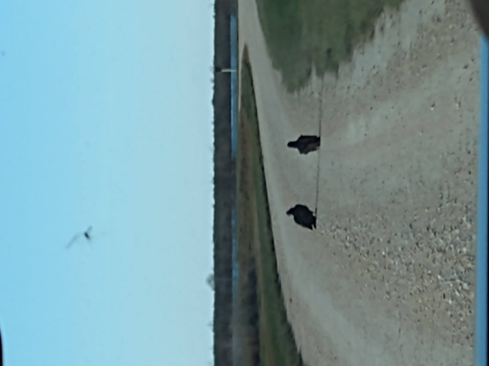

Background
My name is Ram Chitrapu. I am an incoming sophomore at Carnegie Vanguard High School.
My name is Ram Chitrapu. I am an incoming sophomore at Carnegie Vanguard High School.

It varies either between artwork or nature observing. I am leaning towards nature observing as of right now, but I still try to do artworks now and then. This is a picture of some vultures I found a few years ago.

I don't have a specific favorite food, but I enjoy this one dish called pav bhaji. It is grilled bread with butter and served with a vegetable mash on the side.

My favorite film is the Dark Knight. It is a really grounded film, very realistic and intense. It is also one of the few films that I have watched myself; I'm not a movie person.

I don't have a specific favorite genre, although I've listened to a few different types. It ranges from soft indie game soundtracks, 80's rock, whatever sub-genre it might be, or occasional country.